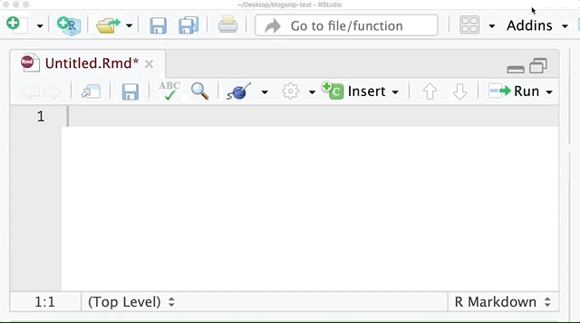

install.packages("remotes") # if not yet installed
remotes::install_github("matt-dray/blogsnip")
tl;dr
On my commute home I made {blogsnip}: a tiny package of RStudio addins that add snippets of R code to help me write blog posts.
The problem
I’m lazy.
There’s some bits of code I often want to put in my blog posts (written in R Markdown) but I can’t remember them.
In particular:
- an expandable ‘details’ section1, which sometimes contains R session information and the date of the post’s last update (see examples throughout this previous post)
- a way to add an image with a caption and alt text that differ (like the gif at the top of this post), something that makes the images more accessible for users of screen readers, for example
- a link that opens in a new tab, rather than in the tab where you’re reading a post (as per this tweet by Albert Y Kim)
Originally I stored them in a GitHub Gist, but this is sub-optimal: the internet connection on my commute can be patchy. I needed an offline solution.
The answer
I use RStudio and {blogdown} to write my blog posts. RStudio has a feature that lets you execute functions from an ‘addins’ menu.
Lots of of addins are available (see this RStudio Community thread). Some simple ones are {datapasta} for copy-pasting stuff into R, {reprex} for generating reproducible examples and even {blogdown} itself, which has addins for creating new posts and inserting images, for example.
So I wrote my snippets into a package that, when installed, adds some functions to RStudio’s addins menu.
The package is called {blogsnip}. Visit the site or source. Install with:
Once installed, the functions are available under ‘BLOGSNIP’ in RStudio’s ‘addins’ dropdown (see the gif at the top of this post). You could also use them like regular functions by calling blogsnip::addin_details(), for example.
How to
You can follow RStudio’s guidance on creating addins, which even incldues some fancy stuff like invoking Shiny-powered interfaces for addins.
But perhaps, like me, you just want to create some simple shareable addins that insert some snippets of text. In which case, the (simplified) steps are:
- Create an R package structure with
usethis::create_package() - Add an R script to house your functions with
usethis::use_r() - Edit the script so you have functions in the form
fun_name <- function() {rstudioapi::insertText("Text")}, where theinsertText()function does exactly that (see example) - Add a special file at
inst/rstudio/addins.dcfthat declares your functions as addins (see example) - Document and build your package and host it for others to use
So you’re writing an R package as usual2, making use of {rstudioapi} functions and adding that special .dcf file.
See what this looks like in the full source code for {blogsnip} (note that I’ve added some other stuff there, like a license, readme and files to generate a {pkgdown} site).
Next
Add more useful snippets to {blogsnip} for writing posts with {blogdown}. Maybe this can include ‘find-and-replace’ rather than ‘insert’ versions of current functions. Maybe you can help?
Oh, and a sticker, probably.
Environment
Session info
Last rendered: 2023-07-25 19:11:01 BSTR version 4.3.1 (2023-06-16)
Platform: aarch64-apple-darwin20 (64-bit)
Running under: macOS Ventura 13.2.1
Matrix products: default
BLAS: /Library/Frameworks/R.framework/Versions/4.3-arm64/Resources/lib/libRblas.0.dylib
LAPACK: /Library/Frameworks/R.framework/Versions/4.3-arm64/Resources/lib/libRlapack.dylib; LAPACK version 3.11.0
locale:
[1] en_US.UTF-8/en_US.UTF-8/en_US.UTF-8/C/en_US.UTF-8/en_US.UTF-8
time zone: Europe/London
tzcode source: internal
attached base packages:
[1] stats graphics grDevices utils datasets methods base
loaded via a namespace (and not attached):
[1] htmlwidgets_1.6.2 compiler_4.3.1 fastmap_1.1.1 cli_3.6.1
[5] tools_4.3.1 htmltools_0.5.5 rstudioapi_0.15.0 yaml_2.3.7
[9] rmarkdown_2.23 knitr_1.43.1 jsonlite_1.8.7 xfun_0.39
[13] digest_0.6.33 rlang_1.1.1 evaluate_0.21 Footnotes
I think I stole this originally from Duncan Garmonsway.↩︎
I recommend Tomas Westlake’s guide for writing an R package from scratch, Emil Hvitfeldt’s {usethis} workflow for package development, Karl Broman’s R Packages Primer and Hadley Wickham’s R Packages book.↩︎
Reuse
CC BY-NC-SA 4.0